Unitree G1
휴머노이드
G1 기본형 · G1 EDU
안전 수칙과 하드웨어, 리모컨 조작과 운용 모드, 시작 · 종료 순서, 라이다 · 카메라 · 음성 · 손, 문제 해결까지 G1을 현장에서 운용하는 데 필요한 내용을 한 권에 정리했습니다.
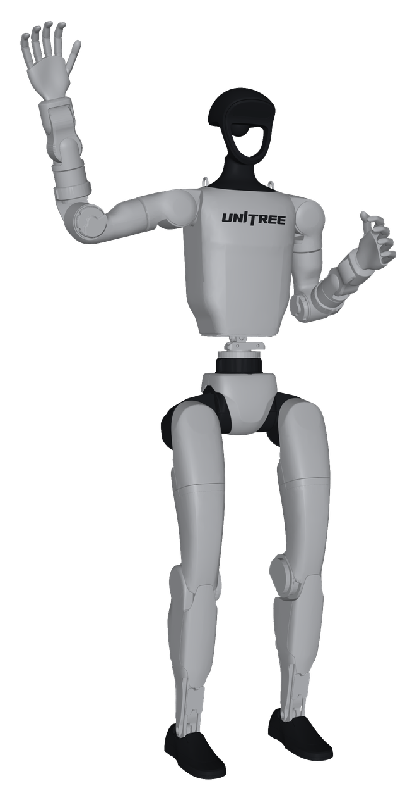
이 설명서에 대하여
| 로봇 | Unitree G1 기본형 (23자유도) · G1 EDU (23자유도 / 29자유도) |
| 근거 문서 | Unitree 문서 센터 G1 SDK Development Guide 전 45쪽 (2026-11-06 수집). 앱 연결은 Unitree G1 User Manual V1.0과 WeGo 입고 검수 절차. |
| 리모컨 키 | Unitree 리모컨 키 스티커 (운동 제어 버전 8.6.0.0 초과, 23자유도용 · 29자유도용) |
| 실측 자료 | WeGo 개발용 G1 23자유도 EDU (2026년 10월) |
| 함께 보는 책 | Unitree G1 개발 설명서 — SDK · DDS · 저수준/고수준 제어 · 손 · 센서 · SLAM · 음성 API (EDU) |
| 판 | 한국어판 · 2026.11.18 |
| 문의 | go.support@wego-robotics.com |
본문의 문서 표시는 Unitree 공식 문서의 내용이고, 실측 표시는 WeGo 보유 장비에서 직접 확인한 값입니다. 29 표시는 29자유도 모델에만 해당하는 내용입니다.
리모컨 조합키는 펌웨어(운동 제어 버전)에 따라 달라집니다. 이 설명서는 8.6.0.0 초과 버전 기준이며, 다른 버전은 Unitree 문서 센터의 해당 버전 스티커를 확인하십시오.
개발용 컴퓨터(PC2)의 공장 기본 계정은 unitree / 123입니다 (6장 "유선 연결 · SSH 접속").
로봇을 외부 네트워크에 연결하기 전에 passwd로 기본 비밀번호를 바꾸십시오.
© WeGo Robotics. 표지와 그림 2의 G1 이미지는 Unitree가 공개한 로봇 메시를 MuJoCo로 렌더링한 것이며, 따로 표시가 없는 기술 도면은 Unitree Robotics 문서에서 가져왔습니다.
목차
- 01시스템 구성
- 02중요 안전 수칙
- 03하드웨어와 관절
- 04리모컨과 운용 모드
- 05시작 · 종료 순서앱 연결 (AP 모드 · Wi-Fi 모드) 포함
- 06개발 안내EDU 전용 · 유선 연결 · SSH 접속 · 자세한 내용은 개발 설명서
- 07센서 · 음성 · 손
- 08WeGo 소프트웨어 미리보기
- 09문제 해결
- 부록빠른 참조
시스템 구성
G1은 키 1.32 m, 무게 약 35 kg의 휴머노이드입니다. 보행 · 균형은 비공개 운동 제어 컴퓨터(PC1)가 맡고, EDU 모델에서는 사용자의 프로그램이 개발용 컴퓨터(PC2) 또는 외부 PC에서 DDS 네트워크로 로봇을 제어합니다.
모델 구분 문서
| 항목 | G1 기본형 | G1 EDU |
|---|---|---|
| 전체 자유도 | 23 | 23 ~ 43 |
| 다리 (한쪽) | 6 | 6 |
| 허리 | 1 (yaw) | 1, 선택 시 3 (+ roll · pitch) |
| 팔 (한쪽) | 5 | 5, 선택 시 7 (+ 손목 pitch · yaw) |
| 손 (한쪽) | 없음 | 선택: Dex3-1 3지 손 7자유도 등 |
| 무릎 최대 토크 | 90 N·m | 120 N·m |
| 팔 최대 하중 | 약 2 kg | 약 3 kg |
| 개발용 컴퓨터 | 없음 | Jetson Orin NX (PC2) |
| 2차 개발 (SDK) | 지원하지 않음 | 지원 |
29자유도는 EDU 모델에 허리 2자유도와 양쪽 손목 2자유도씩을 더한 구성입니다 (23 + 2 + 4). 6장은 EDU 모델에만 해당하며, 개발 내용은 별도의 개발 설명서에 있습니다.
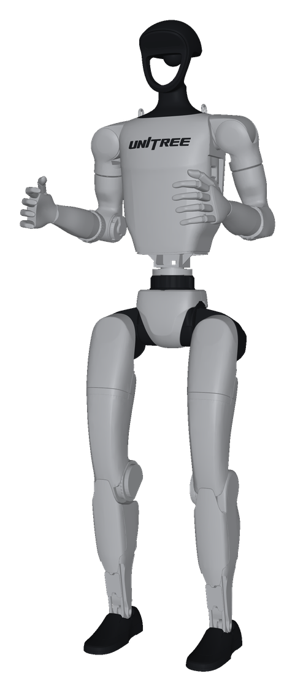
세 가지 제어 경로
| 경로 | 용도 | 연결 |
|---|---|---|
| 리모컨 | 모드 전환, 보행, 인사 · 춤 동작, 비상 댐핑. 현장 운용의 기본 (4장) | 무선 → PC1 |
| Unitree Explore 앱 | 네트워크 설정(BLE), 영상 · 상태(WebRTC), 허리 잠금 등 설정 | BLE · Wi-Fi |
| SDK (DDS · ROS 2) | 사용자 프로그램. 고수준(보행 명령 · 팔 덧씌움)과 저수준(모든 관절 직접 제어). EDU 전용 | LAN · 192.168.123.x |
G1은 사용자가 승인한 경우에만 Unitree 클라우드에 접속합니다. 클라우드는 MQTT로 고장 정보 · OTA 업데이트 · WebRTC 시그널링을 처리하고, TURN/STUN 서버로 원격 영상 연결을 중계합니다. 영상과 제어 트래픽은 서버에서 수집 · 분석하지 않는다고 문서에 명시되어 있습니다. 문서
중요 안전 수칙
G1은 사람 크기의 로봇이며 관절 하나의 토크가 최대 120 N·m에 이릅니다. 넘어지면 사람이 다치고 장비가 손상됩니다. 아래 수칙은 매 운용 전에 확인하십시오.
로봇이 예상과 다르게 움직이면 L2 + B를 누릅니다. 운동 제어 상태에서는 5초 길게 눌러야 합니다. G1은 댐핑 모드로 들어가 모든 모터가 능동 동작을 멈추고, 균형을 잃고 주저앉거나 넘어집니다. 이 키는 디버그 모드에서도 동작합니다. 시험 · 시연 중에는 로봇을 보호 거치대(크레인)에 걸어 둔 상태로 운용하십시오. 문서
G1은 전원이 들어오면 리모컨을 만지지 않아도 내장 운동 제어 프로그램이 시작되어 속도 0 명령을 주기적으로 보냅니다.
이 상태에서 SDK로 rt/lowcmd를 보내면 두 명령이 충돌해 로봇이 떨립니다.
저수준 개발 전에는 반드시 디버그 모드로 들어가십시오 (4장). 문서
운용 전 점검
- 거치대 고정로봇을 보호 거치대에 걸고, 거치대 바닥의 바퀴 4개를 모두 잠급니다.
- 작업 공간 확보로봇 주변을 비웁니다. 춤 동작은 한 방향으로 최대 6 m를 움직입니다. 동작마다 필요한 공간은 4장 춤 표에 있습니다.
- 리모컨 담당 지정운용 중에는 리모컨을 든 사람을 한 명 정하고, 그 사람은 언제든 L2 + B를 누를 수 있게 대기합니다.
- 보조자 배치잠금 서기(②)에서 운동 제어(③ · ⑦)로 넘어갈 때는 사람이 로봇을 붙잡아 똑바로 세워 줘야 합니다 (5장).
- 바닥 확인누운 자세 · 쪼그린 자세에서 시작하는 방법은 평평하고 단단한 바닥에서만 씁니다. 그 밖의 바닥에서는 일어서다 넘어질 수 있습니다.
- 디버그 모드 확인(EDU) 저수준 프로그램을 돌릴 때는 L2 + A로 디버그 모드인지 먼저 확인합니다.
현재 보행 모드에는 계단 오르기 기능이 없습니다. 계단을 오르게 하지 마십시오. 문서
다관절 손(Dex3-1 등)을 달았다면 누운 자세 · 쪼그린 자세 시작이 손을 손상시킬 수 있습니다. 팔 동작이 손과 몸통을 부딪치지 않게 하고, 손을 단 상태에서는 달리기나 균형 시험처럼 격한 동작을 피하십시오. 문서
Move(…, continous_move=true) 또는 ContinuousGait(true)를 쓰면 새 명령이 올 때까지 로봇이 계속 걷거나 제자리걸음합니다.
기본값(꺼짐)에서는 마지막 속도 명령 후 1초가 지나면 스스로 멈춥니다. 꼭 필요할 때만 켜십시오. 문서
촬영 · 공개 시 권장 사항 문서
- 다리 동작 프로그램에서는 무릎을 되도록 곧게 폅니다.
- 걸음 빈도를 낮추고, 제자리 걸음을 피합니다.
- 보행 중 두 발을 조금 가깝게 모읍니다.
- 연구 영상을 공개할 때는 연구실 이름이나 로고를 영상 전체에 잘 보이게 넣을 것을 Unitree가 권장합니다.
- G1은 민간용 로봇입니다. 위험한 개조나 위험한 방식의 사용을 하지 마십시오.
하드웨어와 관절
G1은 다리 6 × 2, 허리 1, 팔 5 × 2 — 기본 23개의 관절 모터를 가집니다. 29자유도 EDU는 허리 2개와 손목 2 × 2개가 더해집니다.
이 장의 관절 번호는 SDK의 motor_cmd[] · motor_state[] 배열 번호와 같습니다.
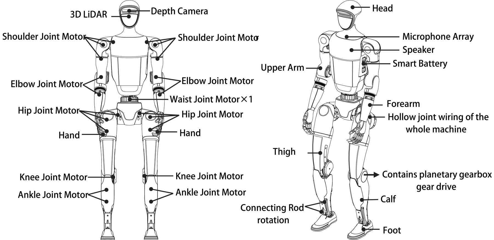
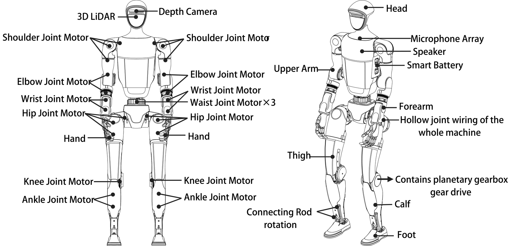
주요 사양 문서
| 항목 | G1 기본형 · EDU 공통 |
|---|---|
| 크기 (선 자세 / 접은 자세) | 1320 × 450 × 200 mm / 690 × 450 × 300 mm |
| 무게 (배터리 포함) | 약 35 kg |
| 다리 길이 (허벅지 + 종아리) | 0.6 m |
| 관절 가동 범위 | 허리 Z ±155° (EDU 3자유도: X ±30°, Y ±30°) · 무릎 0 ~ 165° · 고관절 P ±154°, R −30 ~ +170°, Y ±158° · 손목 P ±92.5°, Y ±92.5° 29 |
| 관절 모터 | 저관성 고속 내전형 PMSM · 산업용 크로스 롤러 베어링 · 이중 엔코더 · 관절 속 중공 배선 · 국부 공랭 |
| 배터리 · 충전기 | 13직렬 리튬 스마트 배터리 9000 mAh (탈착식) · 충전기 54 V 5 A · 사용 시간 약 2시간 |
| 센서 | 깊이 카메라 Intel RealSense D435i + 3D 라이다 Livox MID-360 (머리) |
| 음성 · 통신 | 마이크 4개 배열 · 5 W 스피커 · Wi-Fi 6 · Bluetooth 5.2 · OTA 업데이트 |
관절 번호와 가동 범위 문서
| 번호 | 관절 | 범위 (rad) | 번호 | 관절 | 범위 (rad) |
|---|---|---|---|---|---|
| 0 | 왼 고관절 pitch | −2.5307 ~ 2.8798 | 15 | 왼 어깨 pitch | −3.0892 ~ 2.6704 |
| 1 | 왼 고관절 roll | −0.5236 ~ 2.9671 | 16 | 왼 어깨 roll | −1.5882 ~ 2.2515 |
| 2 | 왼 고관절 yaw | −2.7576 ~ 2.7576 | 17 | 왼 어깨 yaw | −2.618 ~ 2.618 |
| 3 | 왼 무릎 | −0.0873 ~ 2.8798 | 18 | 왼 팔꿈치 | −1.0472 ~ 2.0944 |
| 4 | 왼 발목 pitch | −0.8727 ~ 0.5236 | 19 | 왼 손목 roll | −1.9722 ~ 1.9722 |
| 5 | 왼 발목 roll | −0.2618 ~ 0.2618 | 20 | 왼 손목 pitch 29 | −1.6144 ~ 1.6144 |
| 6 | 오른 고관절 pitch | −2.5307 ~ 2.8798 | 21 | 왼 손목 yaw 29 | −1.6144 ~ 1.6144 |
| 7 | 오른 고관절 roll | −2.9671 ~ 0.5236 | 22 | 오른 어깨 pitch | −3.0892 ~ 2.6704 |
| 8 | 오른 고관절 yaw | −2.7576 ~ 2.7576 | 23 | 오른 어깨 roll | −2.2515 ~ 1.5882 |
| 9 | 오른 무릎 | −0.0873 ~ 2.8798 | 24 | 오른 어깨 yaw | −2.618 ~ 2.618 |
| 10 | 오른 발목 pitch | −0.8727 ~ 0.5236 | 25 | 오른 팔꿈치 | −1.0472 ~ 2.0944 |
| 11 | 오른 발목 roll | −0.2618 ~ 0.2618 | 26 | 오른 손목 roll | −1.9722 ~ 1.9722 |
| 12 | 허리 yaw | −2.618 ~ 2.618 | 27 | 오른 손목 pitch 29 | −1.6144 ~ 1.6144 |
| 13 | 허리 roll 29 | −0.52 ~ 0.52 | 28 | 오른 손목 yaw 29 | −1.6144 ~ 1.6144 |
| 14 | 허리 pitch 29 | −0.52 ~ 0.52 |
23자유도 G1도 DDS 배열 구성은 29자유도와 같습니다. 23자유도에 없는 관절의 자리인 13 · 14 · 20 · 21 · 27 · 28번은 비어 있으며,
unitree_sdk2의 관절 번호 정의에도 "INVALID for g1 23dof"로 표시되어 있습니다. 발목과 29자유도의 허리 roll · pitch는 병렬 기구이며,
SDK는 기본으로 PR 모드(URDF와 같은 pitch · roll 관절)로 제어합니다 (개발 설명서 4장).
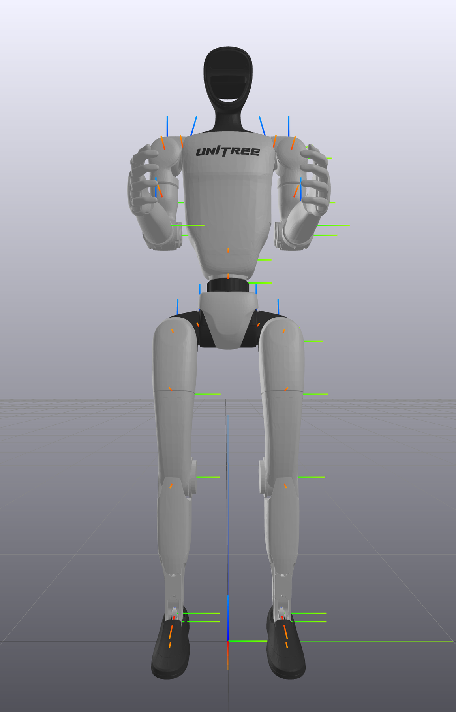
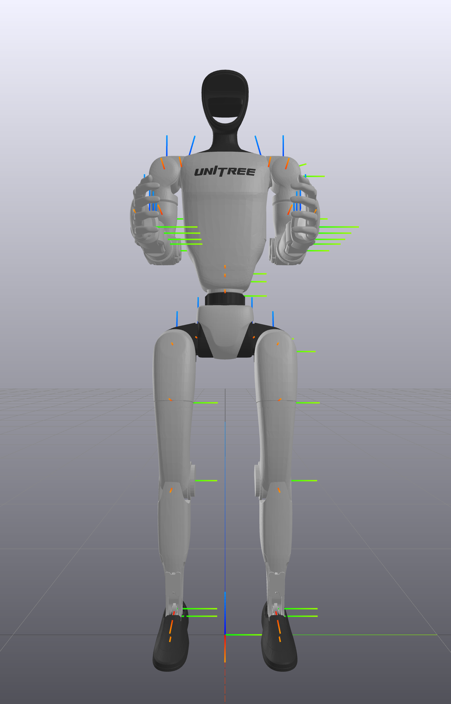
전기 인터페이스 문서
G1 오른쪽 어깨 위에 관절 모터 디버깅 · 센서 확장 · 네트워크용 인터페이스가 모여 있습니다.
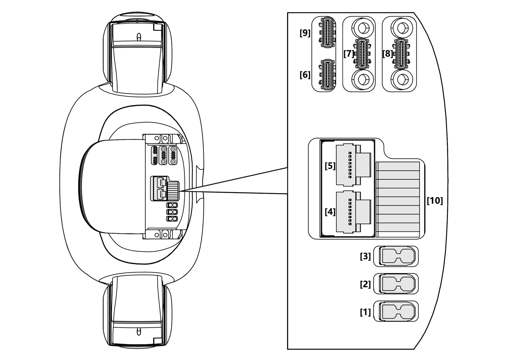
| 번호 | 커넥터 | 사양 |
|---|---|---|
| 1 | XT30UPB-F | VBAT 58 V / 5 A (배터리 직결) |
| 2 | XT30UPB-F | 24 V / 5 A 출력 |
| 3 | XT30UPB-F | 12 V / 5 A 출력 |
| 4 · 5 | RJ45 | 기가비트 이더넷 |
| 6 ~ 8 | Type-C | USB 3.0 호스트, 5 V / 1.5 A |
| 9 | Type-C | USB 3.2 호스트 + DP 1.4 |
| 10 | 5577 | I/O: 12 V / 3 A + GPIO 6개 |
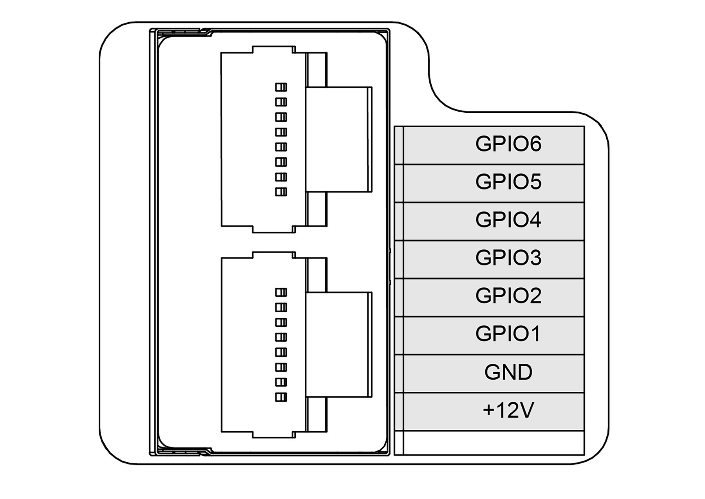
| GPIO | NX 핀 | 기능 |
|---|---|---|
| GPIO1 · 2 | 203 · 205 | UART1 TX · RX (/dev/ttyTHS0, 9600 8N1) |
| GPIO3 · 4 | 232 · 234 | I2C2 SCL · SDA (버스 0) |
| GPIO5 · 6 | 128 · 130 | 범용 GPIO (sysfs 330 · 331) |
운동 제어 컴퓨터(PC1)와 개발용 컴퓨터(PC2)의 이더넷 디버그 포트는 등판에 있으며, 두 포트의 배선 순서는 같습니다 (핀 1 ~ 8: 주황-흰 · 주황 · 초록-흰 · 초록 · 파랑-흰 · 파랑 · 갈색-흰 · 갈색).
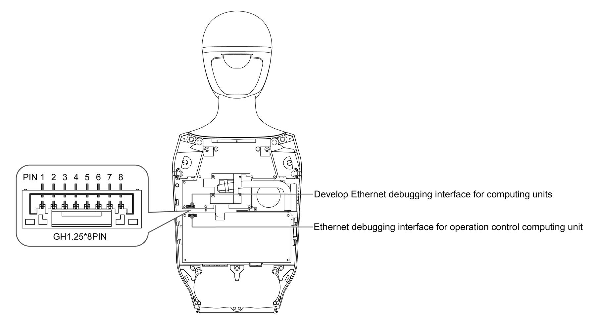
장착 구멍
센서나 장비를 몸통에 달 때는 아래 구멍을 씁니다 (단위 mm). 구멍 위의 라벨을 먼저 떼어 내십시오.
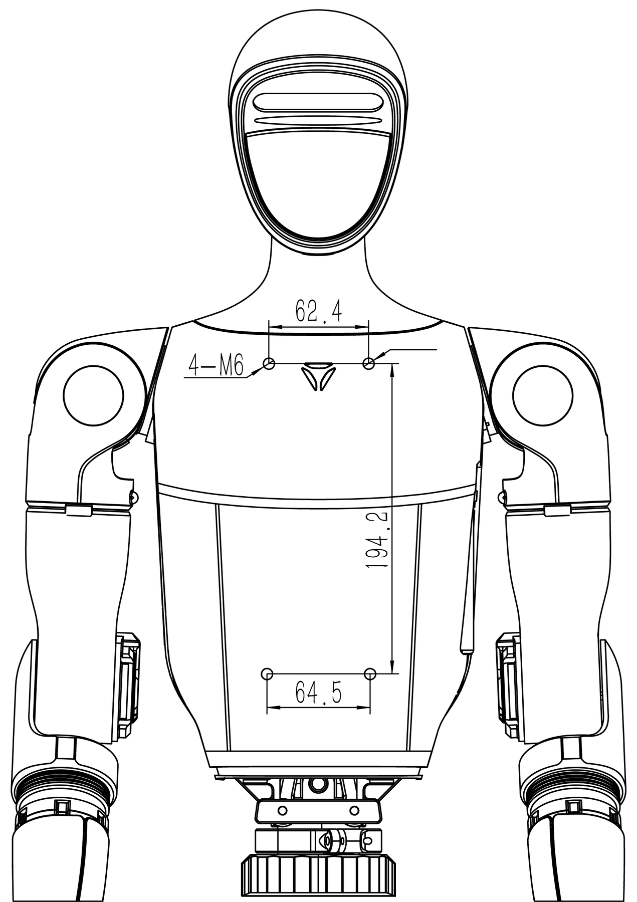
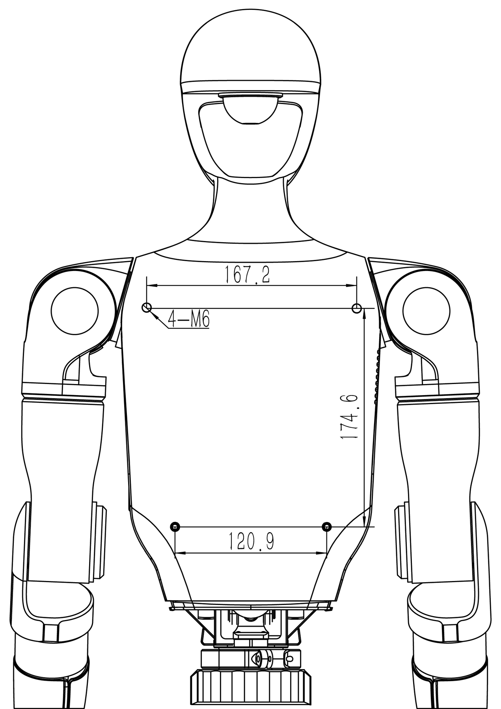
허리 고정구 29 문서
29자유도 G1의 허리는 3자유도라 제어가 까다롭습니다. 허리 roll · pitch가 필요 없으면 Unitree가 제공하는 허리 고정구로 두 병렬 모터를 물리적으로 잠글 수 있습니다.
- 고정구 1 · 2 끼우기몸통을 뒤로 젖혀 고정구 1을, 앞으로 숙여 고정구 2를 끼웁니다. 허리 케이블을 누르지 않게 주의합니다.
- M5 나사 2개 조이기육각 렌치로 고정합니다.
- 앱 설정Unitree Explore 앱 [설정] - [로봇]에서 허리 모터 잠금을 켜고, 안내에 따라 다시 시작합니다.
풀 때는 역순으로 하고 앱에서 잠금을 끕니다. 잠근 상태에서 27관절 보정을 했다면, 고정구를 푼 뒤 29관절 보정을 다시 해야 합니다. 보정하지 않으면 관절 한계 초과 오류가 납니다 (9장).
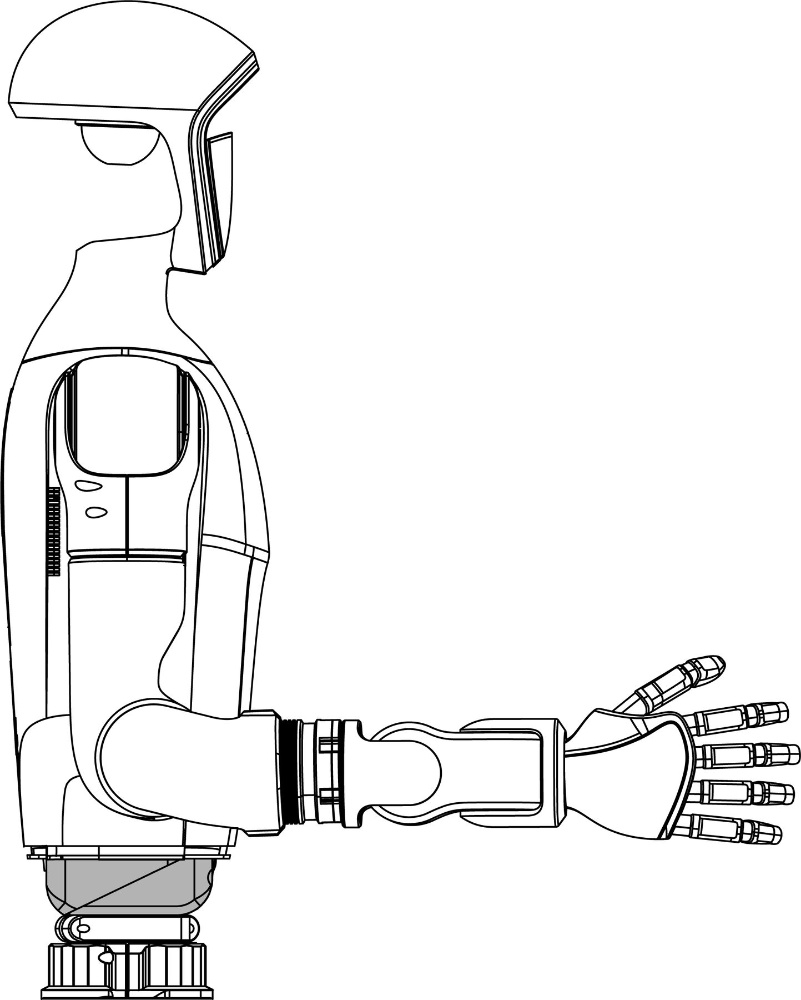
리모컨과 운용 모드
리모컨은 모드 전환과 보행의 기본 도구입니다. 대부분의 조합은 L2나 R1 · R2를 누른 채 다른 버튼을 누르는 방식입니다. ★는 짧게 한 번, ▲는 2초 길게 눌러야 동작합니다.
운용 모드 문서
| 모드 | 동작 | LED |
|---|---|---|
| 제로 토크Zero Torque | 모든 모터가 능동 동작을 멈춥니다. 관절을 움직여도 저항이 없습니다. 전원을 켠 직후의 상태 | 보라 |
| 댐핑Damping | 모든 모터가 능동 동작을 멈추고, 움직이면 뚜렷한 저항이 느껴집니다. 여기서 잠금 서기로 갈 수 있습니다. 비상 정지가 이 모드입니다 | 주황 |
| 잠금 서기 (준비)Locked Standing | 5초 안에 천천히 운동 전 준비 자세를 잡습니다. 균형 제어는 하지 않습니다 | 짙은 파랑 (대기) |
| 쪼그려 앉기 · 앉기Squat · Seated | 5초 안에 천천히 쪼그린 자세 · 의자에 앉는 자세를 잡습니다 (균형 제어 없음) | 초록 (앉기) |
| 운동 제어Motion | 리모컨으로 걷고 달리는 모드. 로봇이 스스로 균형을 잡습니다 | 파랑 |
| 디버그Debug | 내장 운동 제어를 멈추는 저수준 개발용 모드 (EDU) | 노랑 |
| 오류 | 이상 상태 | 빨강 |
운동 제어 안에서 서기 모드는 조이스틱 입력이 0이면 걸음을 멈추고 서 있으며, 입력이 있거나 균형이 흔들리면 걸음을 뗍니다. 연속 걷기 모드는 늘 제자리걸음을 합니다 (권장하지 않음). 두 모드는 START로 바꿉니다.
모드 전환 키 문서
| 모드 | 조합키 | 23 · 29 | |
|---|---|---|---|
| 제로 토크 | L2 + Y | ★ | 공통 |
| ① 댐핑 | L2 + B | ★ | 공통 · 운동 제어 중에는 5초 |
| ② 잠금 서기 | L2 + ↑ | ★ | 공통 |
| ④ 앉기 | L2 + ← | ▲ | 공통 |
| ⑤ 누운 자세 → 서기 | L2 + X | ★ | 공통 |
| ⑥ 쪼그리기 ↔ 서기 | L2 + A | ▲ | 공통 |
| ⑩ 자동 일어서기Adapt Rise | R1 + R2 + X | ★ | 공통 |
| 디버그 모드 (EDU) | L2를 누른 채 R2 | ★ | 공통 · 제로 토크 · 댐핑에서만 |
운동 제어 키 문서
| 모드 | 조합키 | 비고 | |
|---|---|---|---|
| ③ 달리기 모드Running | R2 + A | ▲ | 저속 R2 + ↓ · 고속 R2 + ↑ ★ |
| ⑦ 일반 모드Regular | R1 + X 29 3자유도 허리: R1 + Y | ▲ | 저속 L2 두 번 · 고속 L1 두 번 ★ |
| ⑧ 장애물 넘기Climb | R2 + B | ▲ | 제자리걸음 / 서기: START 두 번 ★ |
| 음성 모드 전환Normal / Welcome | R1 + R2 + Y | ★ | 일반 / 안내 모드 (7장) |
왼쪽 스틱은 앞뒤 · 옆 이동, 오른쪽 스틱은 회전입니다. 일반 모드에서 몸이 한쪽으로 흐르면 R1을 누른 채 방향키로 보정합니다 (→ 왼쪽, ← 오른쪽, ↓ 앞쪽, ↑ 뒤쪽 보정). 이 보정 방향은 문서 그대로이며, 처음에는 짧게 눌러 결과를 확인하십시오.
인사 동작 문서
| 동작 | 조합키 | 동작 | 조합키 |
|---|---|---|---|
| 악수 | SELECT + A | 손 키스 | X 두 번 |
| 손 높이 흔들기 | SELECT + Y | 박수 | A 두 번 |
| 가슴 앞 손 흔들기 | Y 두 번 |
춤 모드 문서
R1 + B로 춤 모드에 들어간 뒤 아래 키를 짧게 누릅니다. 괄호는 필요한 공간입니다. 춤 · 상체 동작 중 START를 두 번 누르면 즉시 멈춥니다.
| 춤 | 조합키 | 공간 | 춤 | 조합키 | 공간 |
|---|---|---|---|---|---|
| 찰스턴 1 | R1+↑ | →1 m | 팝핀 3 29 | R1+↓ | ↑6 m, ←3 m |
| 찰스턴 2 | R1+← | ↑1 m, ←1 m | 팝핀 4 29 | L1+Y | ↑4 m, ←2 m |
| 찰스턴 3 | R1+→ | ↗3 m | 발레 29 | L1+A | ↖6 m, →3 m |
| 절권도 | R2+↑ | 3 × 3 m | 민속춤 29 | L1+B | ↖2 m, →4 m |
| 트위스트 | R2+← | 3 × 3 m | 그루브 29 | L1+↑ | 3 × 3 m |
| 팝핀 5 29 | L1+← | 3 × 3 m | |||
| 워밍업 29 | L1+→ | 3 × 3 m | |||
| 힙합 29 | L1+↓ | 3 × 3 m |
디버그 모드 (EDU) 문서
- 매달고 댐핑로봇을 거치대에 매단 채 댐핑(또는 제로 토크) 상태로 둡니다.
- 디버그 진입L2를 누른 채 R2. 내장 운동 제어가 멈춥니다.
- 확인L2 + A를 누르면 로봇이 위치 모드로 정해진 진단 자세를 잡습니다 (그림 14). 자세가 다르면 L2 + R2를 여러 번 눌러 다시 들어갑니다.
- 댐핑으로L2 + B로 댐핑에 둔 뒤 SDK 개발을 시작합니다.
디버그 모드에서는 내장 운동 제어가 완전히 멈추므로 고수준 서비스(LocoClient, 팔 덧씌움)도 동작하지 않습니다.
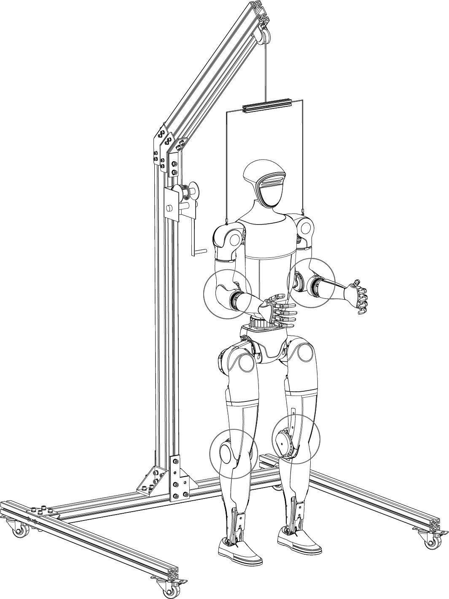
이 장의 키는 운동 제어 버전 8.6.0.0 초과 기준입니다. 8.2 ~ 8.5 버전 문서에는 ⑧이 "R1 + Y (3자유도 허리 전용)"로 되어 있는 등 조합이 다릅니다. 앱에서 버전을 확인하고, 다르면 Unitree 문서 센터 Remote Control 쪽의 해당 버전 스티커를 쓰십시오.
시작 · 종료 순서
G1은 보호 거치대에 매단 상태, 의자에 앉은 상태, 누운 · 쪼그린 상태에서 시작할 수 있습니다. 처음 운용하거나 사람이 많은 곳에서는 매단 상태(A)를 기본으로 하십시오. 휴대폰 앱 연결은 이 장 끝에 있습니다.
A. 매단 상태에서 시작 (기본) 문서
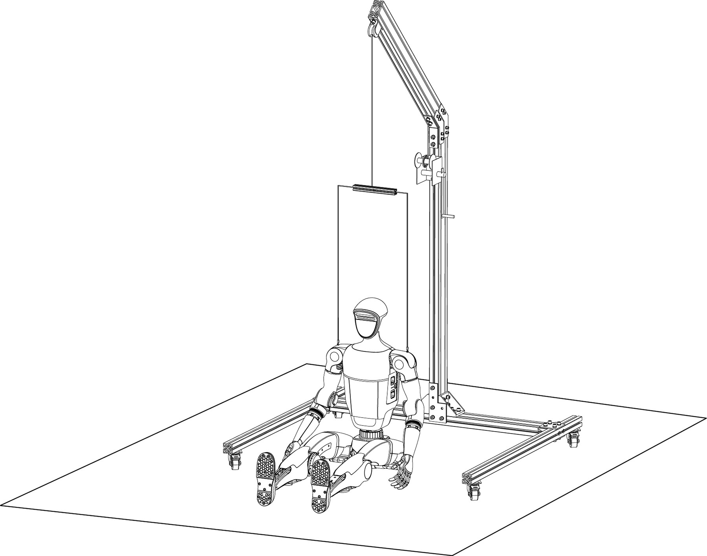
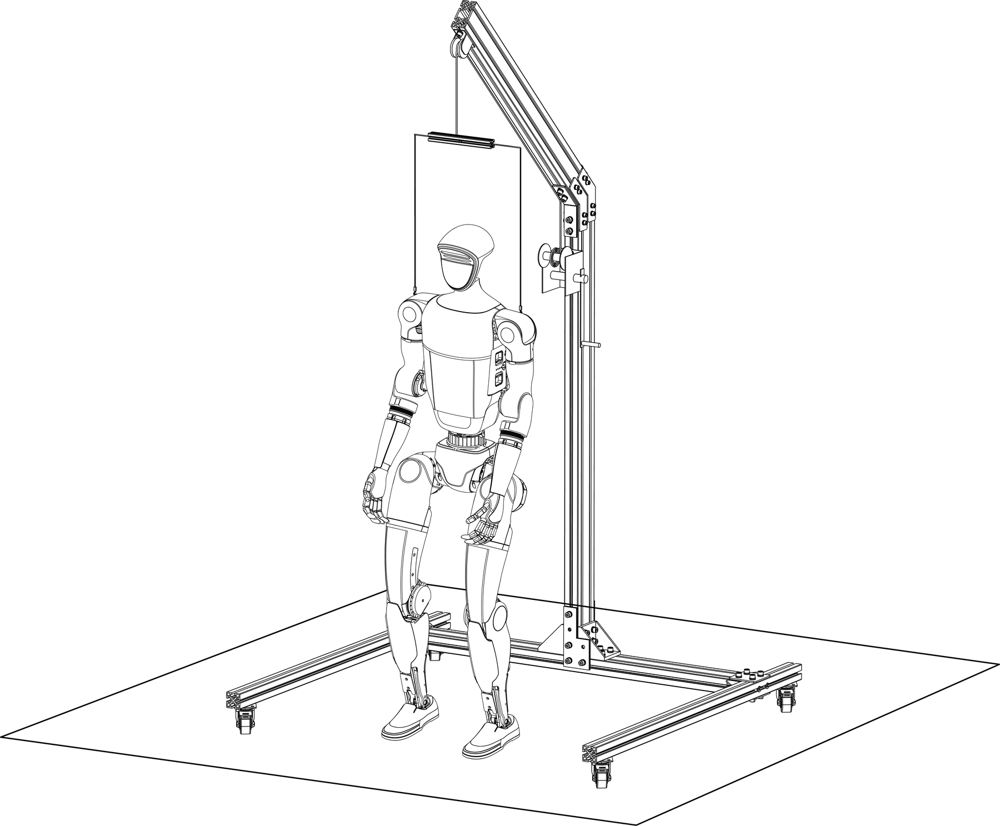
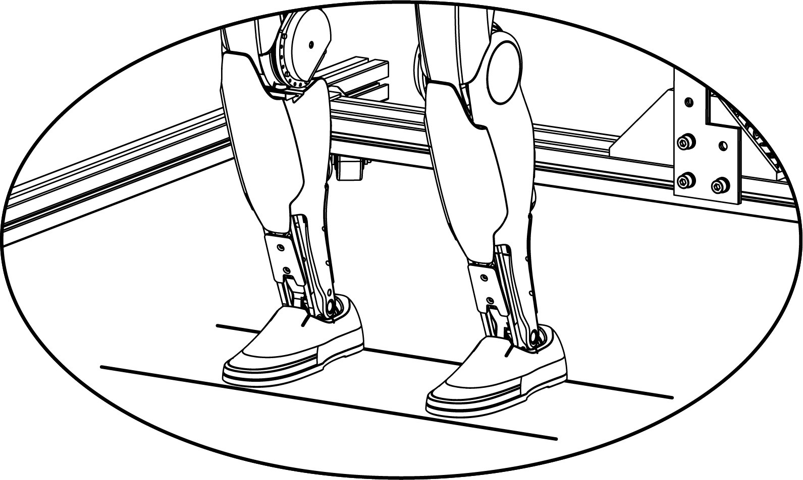
- 매달기보호 거치대에 G1을 걸고 거치대 바퀴를 잠급니다. 팔다리를 자연스럽게 내려 둡니다.
- 배터리 끼우기몸통 옆의 배터리 칸에 방향을 맞춰 넣습니다. "딸깍" 소리가 나면 끝입니다. 억지로 누르지 마십시오.
- 전원 켜기배터리 전원 버튼을 짧게 한 번 누른 뒤 2초 이상 길게 누릅니다.
- 부팅 대기 (약 1분)발목이 한계에 닿는 소리가 나면 초기화가 끝난 것입니다. 30초 더 기다립니다. WeGo의 G1 시작 안내서에 따르면 "Zero Torque Mode" 음성과 함께 보라색 LED가 켜지면 제로 토크 상태입니다.
- 리모컨 연결리모컨 전원을 켭니다. 처음 쓰는 리모컨은 Unitree 문서의 리모컨 바인딩 영상대로 짝을 맞춥니다.
- 댐핑 → 잠금 서기L2 + B로 댐핑, 이어서 L2 + ↑로 잠금 서기. 로봇이 5초 안에 준비 자세를 잡습니다.
- 발 내리기거치대 줄을 내려 두 발이 바닥에 닿게 합니다. 줄은 조금 여유 있게 둡니다.
- 운동 제어 시작R2 + A(③ 달리기 모드) 또는 R1 + X(⑦ 일반 모드)를 2초 누릅니다. G1이 걸음을 조정하며 섭니다. 이때 두 발은 반드시 바닥에 닿아 있어야 합니다.
- 줄 풀기자세가 안정되면 고리를 완전히 풉니다. 이제 스틱으로 움직이고, START로 서기 · 걷기를 바꿉니다.
A. 매단 상태로 종료
- 다시 매달기거치대 고리를 다시 걸고, 줄이 로봇을 살짝 당길 만큼 팽팽하게 합니다. 사람이 뒷목 손잡이를 잡고 있을 것을 권장합니다.
- 댐핑L2 + B를 약 5초 눌러 댐핑으로 들어갑니다.
- 전원 끄기댐핑 상태에서 배터리 전원 버튼을 짧게 한 번 + 길게 눌러 끄고, 배터리를 뺍니다. (끄지 않고 다시 쓰려면 L2 + ↑로 잠금 서기, EDU 개발이면 L2 + R2로 디버그 모드)
B. 의자에 앉아 시작 · 종료 문서
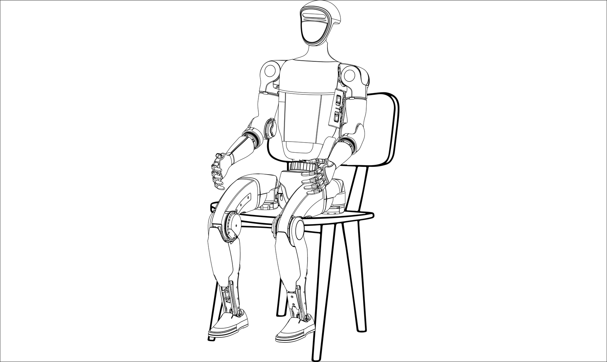
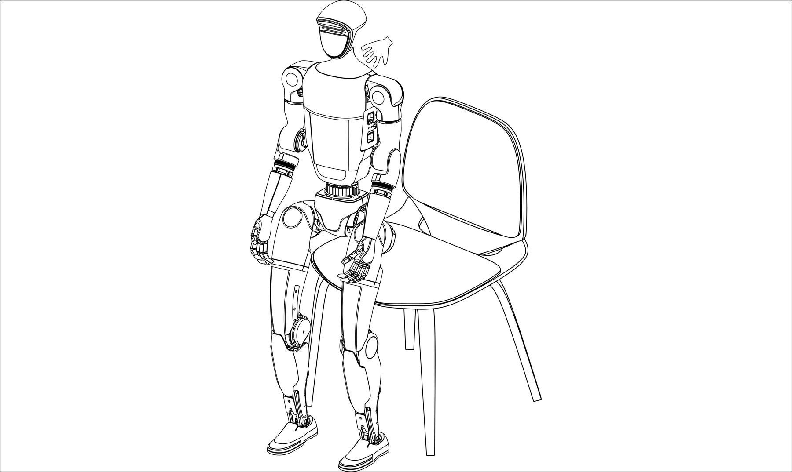
시작 — 의자에 팔다리를 자연스럽게 두고 앉힌 뒤 배터리를 넣고 전원을 켭니다. 약 1분 뒤 제로 토크가 되면 L2 + B(댐핑) → 어깨를 잡고 L2 + ↑(잠금 서기) → 똑바로 서면 R1 + X (29 3자유도 허리는 R1 + Y). 리모컨 스티커에서 권장하는 순서(켜기 → ① → ② → ③ → 시연 → ④ → 끄기)도 같은 흐름이며, ②에서 ③으로 넘어갈 때 사람이 로봇을 똑바로 붙잡아 줘야 합니다.
종료 — 로봇을 의자 앞에 의자를 등지고 세워 멈춘 뒤, 어깨와 손잡이를 잡고 L2 + ←(④ 앉기, 2초)를 눌러 앉도록 돕습니다. 앉으면 L2 + B로 댐핑에 두고 전원을 끕니다.
C. 누운 자세 · 쪼그린 자세 문서
| 시작 자세 | 순서 |
|---|---|
| 누운 자세 | 켜기 → ① L2+B → ⑩ R1+R2+X (자동 일어서기) → 시연 → ⑥ L2+A → 끄기. 엉덩이가 바닥에 평평하게 닿게 눕힙니다 |
| 쪼그린 자세 | 켜기 → ① → ⑥ L2+A (일어서기) → 시연 → ⑥ (다시 쪼그리기) → 끄기 |
누운 · 쪼그린 자세 시작은 평평하고 단단한 바닥에서만 씁니다. 손을 단 경우 손이 손상될 수 있습니다.
배터리 · 충전
9000 mAh 탈착식 스마트 배터리로 약 2시간 운용합니다. 충전은 전용 충전기(54 V 5 A)로 하며, 배터리는 반드시 댐핑 상태에서 전원을 끈 뒤 뺍니다. 문서
앱 연결 — AP 모드 · Wi-Fi 모드 문서
Unitree Explore 앱으로 로봇 상태 확인, 리모컨 바인딩, 허리 잠금, 펌웨어 업데이트를 합니다. 앱은 블루투스로 로봇을 찾아 네트워크를 설정한 뒤, 아래 두 방식 중 하나로 로봇에 연결합니다.
| 방식 | 연결 | 알맞은 곳 |
|---|---|---|
| AP 모드 | 휴대폰이 G1이 내보내는 Wi-Fi 핫스팟에 직접 접속합니다 | 공유기가 없는 곳, 현장 시연 |
| Wi-Fi 모드 | G1과 휴대폰이 같은 공유기(Wi-Fi)에 접속합니다 | 연구실 · 사무실. 펌웨어 업데이트처럼 인터넷이 필요한 기능 |
- 앱 설치Unitree Explore 앱을
www.unitree.com/mobile/app/g1에서 설치합니다. 앱은 최신 버전으로 씁니다. - 블루투스 켜기휴대폰의 블루투스를 켜고, 휴대폰 설정에서 Unitree Explore 앱에 블루투스 권한을 허용합니다. 권한이 없으면 앱이 로봇을 찾지 못합니다.
- 로봇 켜기이 장의 A 순서대로 G1을 켜고 부팅이 끝날 때까지 기다립니다. 휴대폰은 로봇 가까이에 둡니다.
- 로봇 추가앱 홈 화면에서 [Add Robot]을 누르고 목록에서 G1을 고릅니다.
- 연결 방식 선택[AP Mode] 또는 [Wi-Fi Mode]를 고르고 앱의 안내를 따릅니다. AP 모드는 휴대폰 Wi-Fi 설정에서 G1의 핫스팟에 접속합니다. 핫스팟 이름에는 특수 문자와 공백을 쓰지 마십시오. Wi-Fi 모드는 G1이 접속할 공유기를 정하고, 휴대폰도 같은 공유기에 접속해 둡니다.
- 연결 확인연결되면 앱 홈 화면에 로봇 상태가 표시됩니다. 연결되지 않으면 9장 "문제 해결"의 앱 항목을 보십시오.
앱으로 확인할 것 · 바인딩 해제 실측
WeGo가 G1을 입고 검수할 때 앱에서 확인하는 항목입니다. 처음 받은 로봇이나 수리 후 로봇도 같은 순서로 확인하십시오.
| 항목 | 위치 | 확인 내용 |
|---|---|---|
| 서비스 상태 | [Device] → [Services] → [Service Status] | 주요 서비스가 켜져 있는지 봅니다. 디버그 모드나 SDK 작업 뒤 꺼진 서비스가 있으면 다시 켜야 리모컨으로 조작할 수 있습니다 |
| 관절 · IMU | 홈 화면 [Body Info] | 관절 정보와 IMU 상태, 허리 잠금(29) 같은 기능이 정상인지 봅니다 |
| 카메라 | 홈 화면 오른쪽 아래 [Go] | 카메라 영상이 갱신되는지 봅니다. 깊이 카메라가 연결된 모델은 [Service Status]에서 video_hub 서비스를 함께 확인합니다 |
| 로봇 정보 | [Device] → [About Robot] | 모델과 펌웨어 버전. 기술 지원에 문의하거나 원격 업데이트를 요청할 때 이 화면을 캡처해 보내 주십시오 |
| 바인딩 해제 | [About Robot] 맨 아래 [Unbind the robot] | 로봇과 앱 계정의 연결을 끊습니다. 로봇을 다른 사람에게 넘기기 전에 누릅니다 |
G1은 처음 연결한 앱 계정에 바인딩됩니다. 앱 목록에 로봇이 보이는데 연결(Connect)되지 않으면 다른 계정의 바인딩이 남아 있는 경우가 많습니다. 이전 사용자가 [Unbind the robot]을 누르거나, 이전 사용자를 찾을 수 없으면 S/N을 적어 기술 지원(go.support@wego-robotics.com)에 바인딩 해제를 요청하십시오.
무선 간섭이 심한 곳에서는 앱의 네트워크 설정이 실패하거나 연결이 끊길 수 있습니다. 이런 곳에서는 리모컨으로 운용하고, 앱 설정은 간섭이 적은 곳에서 미리 마치십시오.
개발 안내 (EDU)
G1 EDU는 사용자 프로그램으로 로봇을 제어할 수 있습니다. 개발 내용은 별도의 Unitree G1 개발 설명서에 있고, 이 장은 시작 전에 알아야 할 것만 담았습니다. G1 기본형은 2차 개발을 지원하지 않습니다.
- 매달기 — 관절을 움직이는 프로그램은 로봇을 보호 거치대에 매달고 시험합니다.
- 디버그 모드 — 저수준 제어 전에는 L2 + R2로 들어가 L2 + A로 확인합니다 (4장). 내장 제어와 명령이 충돌하면 로봇이 떨립니다.
- 비상 정지 대기 — 리모컨 담당자가 L2 + B(댐핑)를 누를 수 있게 대기합니다. 이 키는 디버그 모드에서도 동작합니다.
- 작은 값부터 — 속도 · 게인 · 가중치는 작은 값에서 시작해 천천히 올립니다.
EDU에서 할 수 있는 것 문서
| 구분 | 내용 | 개발 설명서 |
|---|---|---|
| 개발 환경 | 외부 PC(Ubuntu 20.04) 또는 PC2에서 unitree_sdk2 (C++ · Python) · ROS 2 | 1 · 2장 |
| 저수준 제어 | 디버그 모드에서 모든 관절을 직접 제어 (rt/lowcmd, 500 Hz) | 4장 |
| 고수준 제어 | 보행 · 모드 전환(LocoClient), 팔 덧씌우기(rt/arm_sdk), 팔 동작 | 5장 |
| 손 · 센서 · SLAM | 다관절 손, 오도메트리 · 라이다 · 깊이 카메라, SLAM 내비게이션 | 7 · 8장 |
| 음성 · 오디오 | 음성 합성(TTS) · 음량 · 조명 · 소리 재생 API | 9장 |
로봇 네트워크는 192.168.123.0/24입니다. PC1(.161) · PC2(.164) · 라이다(.120)의 주소는 1장 그림 1과 부록 "네트워크"에 있으며, 외부 개발 PC는 어깨 RJ45 포트에 유선으로 연결하고 192.168.123.99를 권장합니다.
유선 연결 · SSH 접속 실측
개발 PC를 G1에 케이블로 연결하고 개발용 컴퓨터(PC2)에 접속하는 순서입니다. WeGo가 입고 검수 때 쓰는 순서와 같습니다.
- 케이블 연결오른쪽 어깨 위(목 뒤) 인터페이스의 실리콘 마개를 열고, RJ45 포트(3장 "전기 인터페이스" 4 · 5번)와 개발 PC를 LAN 케이블로 연결합니다.
- 고정 IP 설정개발 PC의 유선 네트워크에
192.168.123.99/255.255.255.0을 줍니다. 로봇이 쓰는.161(PC1) ·.164(PC2) ·.120(라이다)는 피합니다. - 연결 확인
ping 192.168.123.164(PC2)와ping 192.168.123.161(PC1)이 응답하면 연결된 것입니다. - SSH 접속
ssh unitree@192.168.123.164로 접속합니다. 공장 기본 비밀번호는123입니다. - 비밀번호 바꾸기처음 접속하면
passwd로 비밀번호를 바꿉니다. 로봇을 외부 네트워크에 연결하기 전에 반드시 바꾸십시오. - 예제 실행저수준 예제는 L2 + R2로 디버그 모드에 들어간 뒤(4장), 고수준 예제는 운동 제어 상태에서 실행합니다.
끝나면
Ctrl+C로 멈춥니다. 디버그 모드 뒤에는 로봇을 다시 켜고, 앱 [Service Status]에서 꺼진 서비스가 없는지 확인합니다.
sudo nmcli con add type ethernet ifname <유선 인터페이스> con-name g1 \
ipv4.method manual ipv4.addresses 192.168.123.99/24
sudo nmcli con up g1
ping -c 3 192.168.123.164
ssh unitree@192.168.123.164 # 비밀번호 123 (공장 기본값)
passwd # 첫 접속 때 비밀번호 바꾸기
센서 · 음성 · 손
G1의 머리에는 3D 라이다와 깊이 카메라가, 가슴에는 마이크 4개와 스피커가 있습니다. EDU 모델은 다관절 손을 달 수 있습니다.
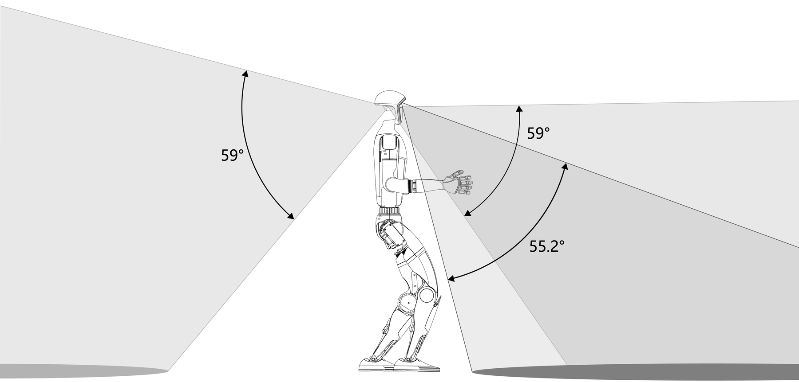
라이다 · Livox MID-360 문서
- 공장 IP는
192.168.123.120. 같은 대역의 PC에서ping으로 확인합니다. - Livox Viewer 2는 개발자 PC에서 실행합니다. PC2(Arm)에서는 실행되지 않습니다 ("Exec format error").
- 로봇은 점군과 라이다 IMU를 DDS 토픽
rt/utlidar/cloud_livox_mid360·rt/utlidar/imu_livox_mid360으로도 냅니다. - WeGo 보유 G1에서는 MID-360이 뒤집혀 달려 있어, 점군을 표시할 때 위아래를 뒤집어야 했습니다. 실측
깊이 카메라 · RealSense D435i 문서
머리의 D435i는 PC2에 USB로 연결됩니다. PC2에 librealsense를 설치하면 realsense-viewer나 SDK로 영상을 읽을 수 있습니다.
EDU+ 모델에서 앱 영상이 보이지 않으면 먼저 목 뒤의 USB-C 케이블이 어깨의 Type-C 포트에 꽂혀 있는지 확인하십시오.
SLAM · 내비게이션 서비스 (EDU) 문서
Unitree는 라이다 기반 지도 작성 · 위치 추정 · 경로 이동 서비스(slam_operate)를 제공합니다. 지도를 만든 뒤
그 지도 위에서 위치를 잡고 목표 지점으로 이동합니다. 호출 방법과 절차는 개발 설명서 8장에 있습니다.
- 적용 범위: 특징이 풍부한 정적인 실내 평지, 가로 · 세로 45 m 미만. 교육 · 연구용이며 산업용으로는 권장하지 않습니다.
- 사용 전에 라이다 점군과 IMU에 이상이 없는지, 머리가 위를 향해 흔들림 없이 고정되어 있는지 확인합니다.
음성 비서 문서
펌웨어 1.3.0 이상에서 인터넷에 연결되면 GPT 기반 대화(잡담, 동작, 음악 재생 등)를 지원합니다.
| 기능 | 방법 |
|---|---|
| 모드 전환 | L1 + L2 동시에 (또는 앱 [기기]-[데이터]-[오디오]-[음성 비서]) |
| 호출어 모드 | "Hello Robot"이라고 부른 뒤 여러 번 대화. 15초 동안 말이 없으면 끝납니다 |
| 버튼 모드 | L2 + SELECT를 누르는 동안 녹음, 떼면 인식. 시끄러운 곳에 적합 |
| 강제 중단 | L1 + SELECT |
소리를 들으면 파란 불이, 명령을 받으면 초록 불이 숨 쉬듯 깜빡입니다. 말해도 불이 깜빡이지 않으면 소리가 들어가지 않은 것입니다. 로봇 정면 1 m 안에서 말하십시오. 인터넷이 없으면 "Hello, I am here"라고 답하는 오프라인 모드가 됩니다.
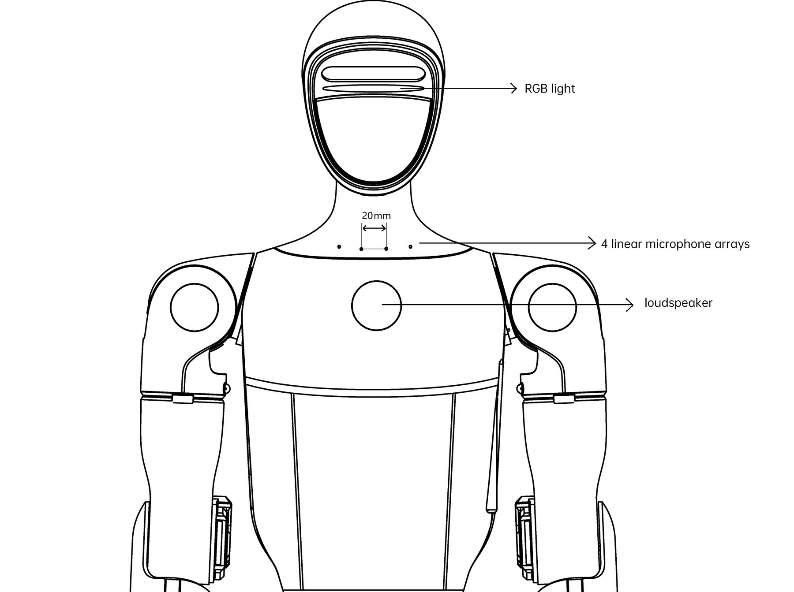
다관절 손 (EDU 선택) 문서
| Dex3-1 | 사양 |
|---|---|
| 자유도 | 7 (엄지 3, 검지 2, 중지 2) |
| 관절 각도 | 엄지 0 ~ 100°, −35 ~ 60°, −60 ~ 60° · 검지 · 중지 0 ~ 90°, 0 ~ 100° |
| 전원 · 통신 · 촉각 | 12 ~ 58 V (문서 사양표) · RS-485 · 배열 센서 9개, 감지 범위 10 ~ 2500 g |
Unitree 문서는 Dex3-1 외에 Inspire(FTP · DFX), BrainCo 손의 연결 방법도 다룹니다. 어떤 손을 달든, 팔 동작이 손과 몸통을 부딪치지 않게 어깨 roll에 바깥쪽 여유를 두십시오.
WeGo 소프트웨어 미리보기
WeGo는 G1용 원격조작 소프트웨어를 함께 제공합니다. Humanoid Pilot은 VR 헤드셋으로 G1의 팔과 보행을 조작하는 WeGo의 원격조작 소프트웨어입니다. 자세한 사용법은 별도의 Humanoid Pilot 사용 설명서를 보십시오.
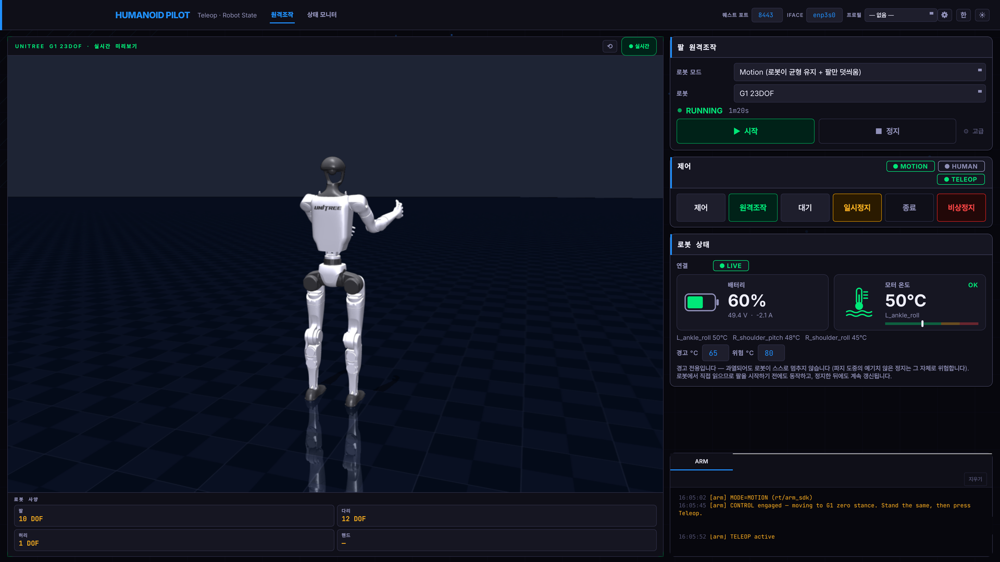
| 기능 | 내용 |
|---|---|
| VR 원격조작 | 헤드셋의 손 위치를 G1 팔 관절로 바꿔 rt/arm_sdk로 보냅니다. 스틱으로 걷기 (LocoClient) |
| 안전 장치 | 제어 · 원격조작 단계 분리, 2초 램프인, 속도 제한, 화면의 비상 정지(댐핑) 버튼 |
| 로봇 상태 | 관절 각도 · 모터 온도, 배터리, 라이다 점군, 오도메트리, 머리 카메라 영상 |
| 관람객 영상 | 원격조작 동안 로봇 카메라 영상을 녹화하고, 끝나면 QR 코드로 휴대폰에 전달 |
문제 해결
| 증상 | 원인 | 조치 |
|---|---|---|
| SDK로 명령하면 로봇이 떨림 | 내장 운동 제어가 속도 0 명령을 계속 보냄 | 디버그 모드로 들어갑니다 (L2+R2, L2+A로 확인) |
| L2+A 자세가 영상과 다름 | 디버그 모드에 완전히 들어가지 않음 | L2+R2를 여러 번 누릅니다 |
| LocoClient · 팔 덧씌움이 반응 없음 | 디버그 모드에서는 고수준 서비스가 꺼짐 | 전원을 다시 켜 운동 제어 상태에서 씁니다 |
| 펌웨어 1.3.0 이상으로 올린 뒤 관절 한계 이상 · 순간 과전압 보고 | 새 펌웨어가 더 높은 보정 정확도를 요구 | 관절 모터를 다시 보정합니다 (Unitree 보정 영상, 23 · 29자유도 별도) |
| 29 허리 고정구를 푼 뒤 관절 한계 초과 오류 | 허리 모터 2개가 보정되지 않음 | 앱의 허리 잠금을 끄고 고정구를 이용해 29관절 보정을 다시 합니다 |
| 앱 네트워크 설정 실패 | 무선 간섭 (전시장 등) | 간섭이 적은 곳으로 옮겨 다시 설정합니다 |
| 앱이 로봇을 찾지 못함 | 휴대폰 블루투스 꺼짐 · 앱에 블루투스 권한 없음 | 블루투스를 켜고 휴대폰 설정에서 앱에 블루투스 권한을 허용합니다 |
| 앱 목록에 로봇이 보이지만 연결되지 않음 ("Network exception") | 다른 계정에 바인딩된 상태 · 오래된 앱 | 이전 사용자가 [Unbind the robot]을 누르거나 기술 지원에 해제를 요청합니다. 앱을 최신으로 올리고 다른 연결 방식(AP ↔ Wi-Fi)과 다른 휴대폰으로도 시도합니다 |
| AP 모드 연결 실패 | 핫스팟 이름의 특수 문자 · 공백, 휴대폰이 멂 | 이름을 영문 · 숫자로 정하고 휴대폰을 로봇 가까이 둔 뒤 로봇과 앱을 다시 시작합니다 문서 |
| 휴대폰 Wi-Fi 목록에 G1 핫스팟이 없음 | 로봇 내부 무선(AP) 이상 | 로봇을 다시 켭니다. 그래도 없으면 Wi-Fi 모드로 연결해 쓰고, 기술 지원에 점검을 요청합니다 (내부 PC 교체가 필요할 수 있음) |
ssh 비밀번호 거부 | 기본 비밀번호가 이미 바뀜 | 비밀번호를 바꾼 사람에게 확인합니다. 공장 기본값은 unitree / 123 |
ping 192.168.123.161 응답 없음 | PC 네트워크 카드가 다른 대역 · 케이블 | 192.168.123.99/24로 설정, 어깨 RJ45 포트 확인 |
| EDU+ 앱에서 깊이 영상이 안 보임 | 목 뒤 USB-C 케이블 빠짐 · PC2 패치 누락 | 케이블을 어깨 Type-C에 꽂습니다. 그래도 안 되면 기술 지원에 PC2 패치를 요청합니다 |
| 음성 비서가 답하지 않음 | 인터넷 연결 없음 · 소리가 들어가지 않음 | 네트워크와 숨쉬는 불빛을 확인하고 정면 1 m 안에서 말합니다 |
| 잠금 서기 후 운동 제어가 시작되지 않음 | 발이 바닥에 닿지 않음 · 키를 짧게 누름 | 줄을 내려 두 발을 바닥에 대고 ▲ 키는 2초 누릅니다 |
Unitree 문서의 알려진 오류
이 설명서는 아래 항목에서 리모컨 스티커와 다른 문서 쪽 표기를 쓰지 않았습니다. 원문을 볼 때 참고하십시오.
- Quick Start의 "의자에 앉아 시작"은 댐핑을
L1 + A, 잠금 서기를L1 + UP로 적었습니다. 스티커와 Remote Control의 키 표는 L2+B · L2+↑입니다. - 같은 문서의 "의자에 앉아 종료"는
L1 + LEFT·L1 + A로 적었습니다. 키 표는 앉기 L2+←, 댐핑 L2+B입니다. - ⑦ · ⑧ 번호는 버전마다 다릅니다. 8.6.0.0 초과 스티커에서 ⑧은 장애물 넘기(R2+B)이고, 이전 키 표에서 ⑧은 3자유도 허리용
R1 + Y입니다.
빠른 참조
매단 상태 시작
- 거치대에 걸기 · 바퀴 잠금
- 배터리 넣기 → 짧게 + 2초 길게
- 약 1분 (+30초) 대기 · 보라 LED
- L2+B 댐핑
- L2+↑ 잠금 서기
- 줄 내려 두 발 바닥에
- R2+A 또는 R1+X (2초)
- 안정되면 고리 풀기
종료 · 비상
- 고리 다시 걸고 줄 팽팽히
- L2+B 5초 → 댐핑
- 배터리 짧게 + 길게 → 끄기
비상: L2+B (운동 제어 중 5초). 로봇은 주저앉거나 넘어집니다.
춤 중지: START 두 번
주요 키
| 제로 토크 | L2+Y |
| 디버그 (EDU) | L2+R2 |
| ④ 앉기 | L2+← ▲ |
| ⑥ 쪼그리기 | L2+A ▲ |
| ⑧ 장애물 | R2+B ▲ |
| 춤 모드 | R1+B |
| 서기 ↔ 걷기 | START |
네트워크 (EDU)
| PC1 운동 제어 | .161 |
| PC2 개발 | .164 |
| PC2 계정 | unitree / 123 |
| 라이다 | .120 |
| 내 PC (권장) | .99 |
대역 192.168.123.0/24 · DDS 도메인 0
리모컨 키 스티커 · 23자유도 (Unitree, 운동 제어 8.6.0.0 초과)
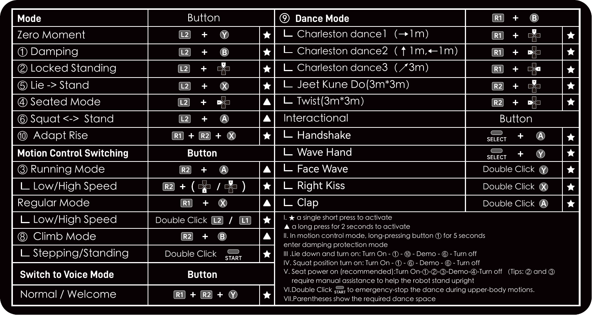
리모컨 키 스티커 · 29자유도 (Unitree, 운동 제어 8.6.0.0 초과)
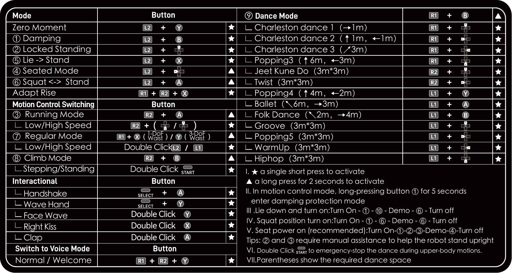